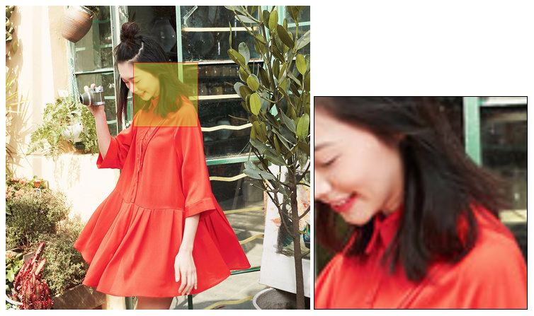

我们在购物时，经常会看到这样的效果：当鼠标划过商品时，会在展示图旁边出现一个商品局部放大图，这就是放大镜效果。这个小效果可以由
HTML5的canvas实现，主要依靠canvas中的drawImage()函数，可以初步认识canvas。让我们快点开始吧。
效果图：

1. 实验原理
一个canvas绘制好一张图片，当鼠标移到canvas上边的时候出现一个透明框，同时另一个canvas(copycanvas)开始绘制透明框部分的图像，利用drawImage()可修改绘制时的大小以实现放大效果。
需要注意的细节：
- 透明框不能移除
canvas； - 鼠标移入、移出
canvas时，copycanvas能对应的显示、隐藏。
2. 需要用到的知识点介绍
2.1 drawImage()函数
此函数为canvas绘制图像方法，即将图像绘制到canvas中，并将图像像素映射为canvas坐标系统的一个单元。
drawImage()可以接受一下 3 套参数：
drawImage(imagedata, dx, dy);此方法会将整幅图像绘制到canvas的指定位置上，dx ，dy分别指目标canvas开始绘制点的x , y坐标。drawImage(imagedata, dx, dy , dw, dh);此套参数中新增的2个参数dw,dh分别代表绘制时指定的宽和高（也因此实现缩放的效果）。drawImage(imagedata, sx, sy, sw, sh, dx, dy, dw, dh);此套参数中又新增了4个参数sx, sy, sw, sh,分别代表被绘制图像开始绘制点的x, y坐标，以及被绘制部分的宽和高。
2.2 Dom Event 对象
当然完成放大镜效果，最终达到和商品展示的放大效果一致，光是 canvas 的图像绘制还是不够的。当我们在商品展示图上移动鼠标能及时看到效果，这就是需要 Dom Event 对象的支持，介绍几个项目中涉及到的对象：
onmouseover鼠标移动到某元素之上触发事件onmousemove鼠标在某元素之上移动时触发事件
2.3 Dom Element 对象
当我们想要控制透明选择框不移出canvas，就需要时刻计算透明选择框和canvas的边距关系，这便涉及到接下来我要介绍的几个 Dom Element 对象：
offsetLeft返回元素水平偏移量(从上到下开始计算)offsetTop返回元素垂直偏移量(从左到右开始计算)
3. 步骤
3.1 页面设计
|
|
3.2 简单的样式设计
|
|
3.3 javascript部分
3.3.1 定义所需变量和共有对象,创建图像对象，并加载
|
|
3.3.2 触发事件
|
|
3.3.3 显示、隐藏选择框和copycanvas
|
|
3.3.4 移动鼠标同时实时移动选择框
|
|
3.3.5 绘制canvas到copycanvas实现放大效果
|
|
到此，便完全实现了放大镜效果。
4. 总结
网上也有各种版本的放大镜效果插件，比如jQuery插件。它的原理是，准备了一大一小且内容相同的两张图，然后通过设置大图的position: absolute，控制left、right属性，以及overflow: hidden，以此来模拟放大效果。显而易见，这样做无意义的增加了请求次数，浪费流量；而且并没有真正的实现图片的局部放大效果。